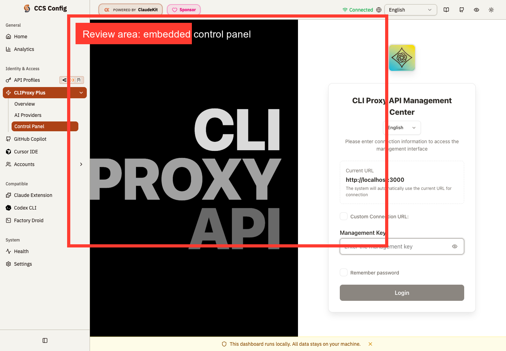
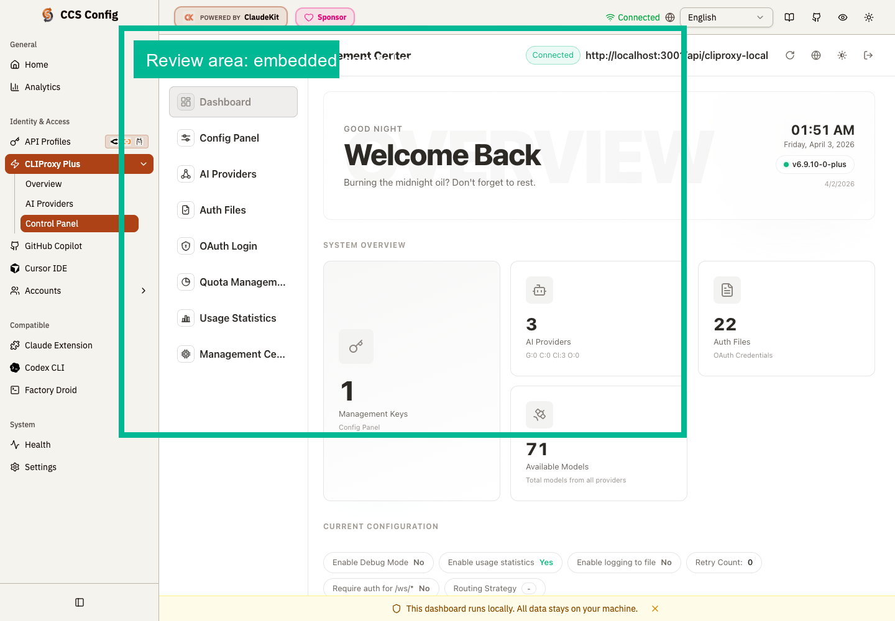

Before: iframe falls back to login

Issue 900
Before the fix, the embedded upstream management center landed on
#/login and asked for credentials again. After the fix, the same surface
boots straight into the authenticated dashboard and starts reading
/api/cliproxy-local/v0/management/*.
Captures use the same route and light theme. The colored callout box marks the iframe review area.


Broken state: iframe URL ended at /management.html#/login.
Fixed state: iframe URL ends at /management.html#/.
Fixed build verified live against the patched worktree dashboard on
localhost:3001.